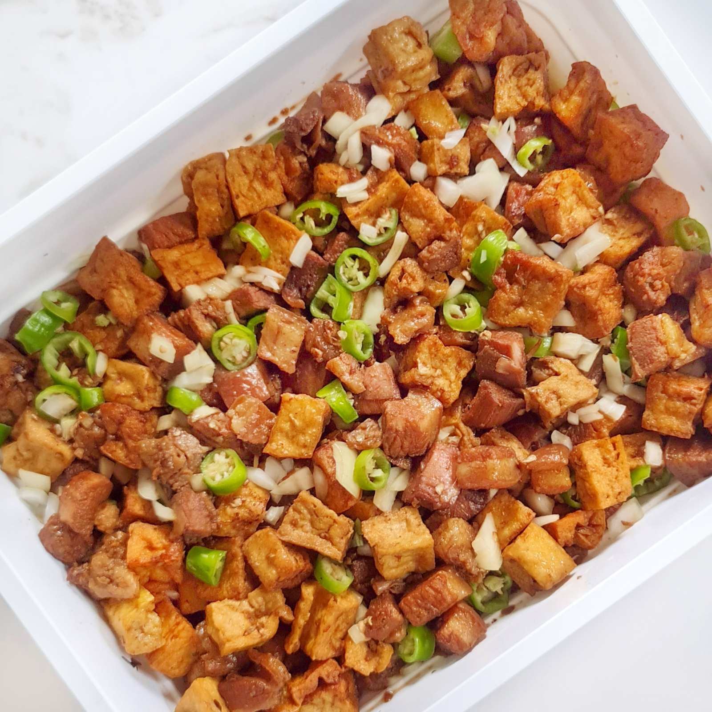
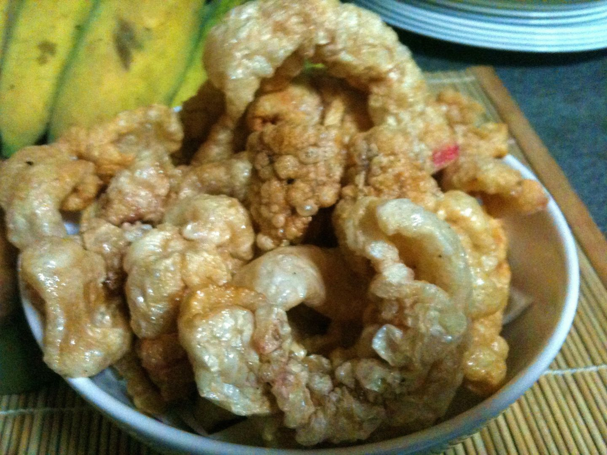
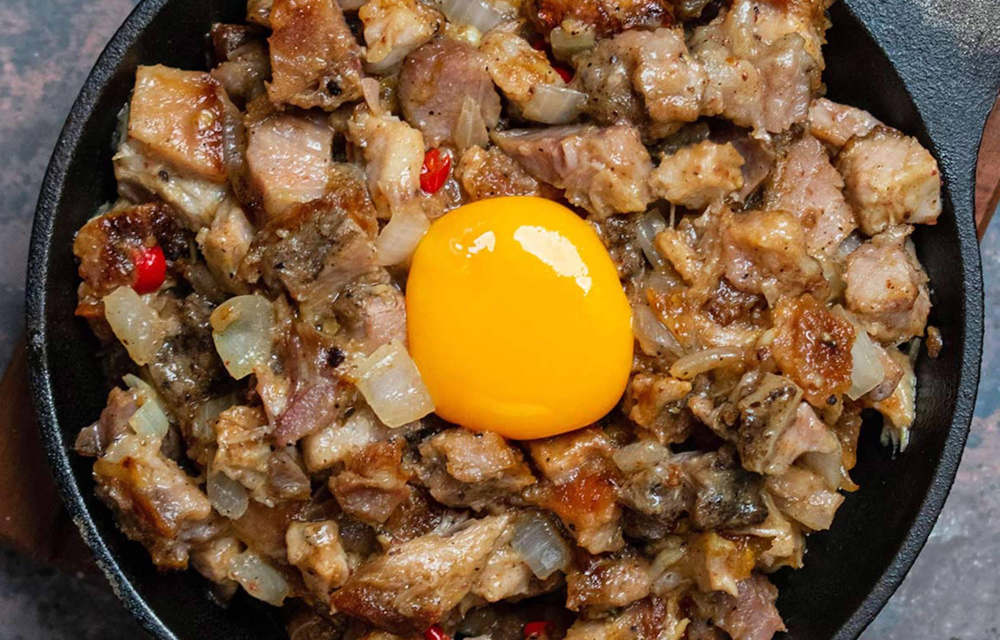

Lumpiang Shanghai

Ingredients
- 500g ground pork
- 1 small carrot, finely chopped
- 1 small onion, minced
- 2 cloves garlic, minced
- 1 egg
- 2 tbsp soy sauce
- Salt and pepper to taste
- Lumpia wrappers (spring roll wrappers)
- Oil for frying
Instructions
- Mix ground pork, carrot, onion, garlic, egg, soy sauce, salt, and pepper in a bowl.
- Place a tablespoon of the mixture on a lumpia wrapper, fold, and roll tightly.
- Seal the edge with water or beaten egg.
- Heat oil and deep fry the rolls until golden brown.
- Drain on paper towels and serve with sweet chili sauce.
Dynamite Lumpia
Ingredients
- 12 large green chili peppers (siling haba)
- 200g ground pork or beef (optional)
- 12 strips of cheese (cheddar or quickmelt)
- Lumpia wrappers
- Oil for frying
Instructions
- Slit the chilies lengthwise and remove the seeds.
- Stuff each chili with a strip of cheese (and optional ground meat).
- Wrap each stuffed chili with a lumpia wrapper, leaving the stem exposed.
- Seal the wrapper with water or beaten egg.
- Deep fry in hot oil until golden brown.
- Drain on paper towels and serve with a dipping sauce of choice.
Kwek-Kwek

Ingredients
- 12 quail eggs, hard-boiled and peeled
- 1 cup flour
- 1 cup water
- 1/2 cup cornstarch
- Orange food coloring (optional)
- Salt and pepper to taste
- Oil for frying
Instructions
- In a bowl, mix flour, water, salt, pepper, and food coloring to make a smooth batter.
- Coat each quail egg lightly with cornstarch.
- Dip the eggs into the batter, coating them completely.
- Deep fry the eggs until golden and crispy.
- Drain on paper towels and serve with spiced vinegar or sweet chili sauce.
Tokwa't Baboy

Ingredients
- 250g pork belly, boiled and cubed
- 200g firm tofu, cubed and fried
- 1/4 cup soy sauce
- 1/4 cup vinegar
- 1 small onion, chopped
- 2 cloves garlic, minced
- 1 small chili (optional)
- Salt and pepper to taste
Instructions
- Boil pork belly until tender, then cut into cubes.
- Deep fry tofu until golden and crispy.
- In a bowl, mix soy sauce, vinegar, garlic, onion, chili, salt, and pepper to make the dipping sauce.
- Combine the pork and tofu in a serving dish, then pour the sauce over or serve it on the side.
Chicharon

Ingredients
- 500g pork skin with a bit of fat
- Salt and pepper to taste
- Water for boiling
- Oil for frying
Instructions
- Grill or roast the eggplants until the skin is charred. Peel off the skin and mash the flesh.
- Combine mashed eggplant with tomatoes, onions, and salted egg (if using).
- Drizzle with vinegar or calamansi juice, season with salt and pepper, and mix well.
- Serve chilled or at room temperature.
Sisig

Ingredients
- 500g pig's face (or pork belly), boiled and grilled
- 1 onion, finely chopped
- 2 cloves garlic, minced
- 1 tbsp soy sauce
- 1 tbsp calamansi or lemon juice
- 1-2 chili peppers, chopped
- 1 egg (optional)
- Salt and pepper to taste
- Oil for cooking
Instructions
- Boil the pig's face until tender, then grill until crispy. Chop into small pieces.
- In a pan, sauté garlic and onion in oil.
- Add the chopped pork, soy sauce, calamansi juice, and chili peppers. Stir and cook until heated.
- Crack an egg on top (optional) and mix well.
- Serve sizzling hot on a hot plate, with extra calamansi and chili on the side.